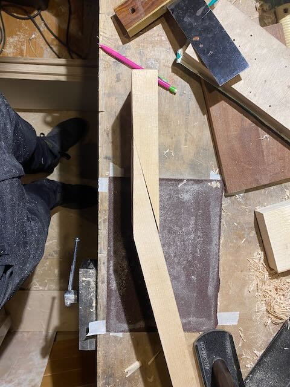
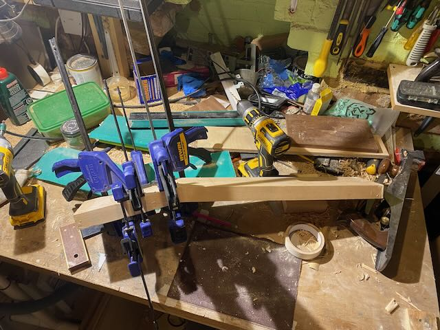
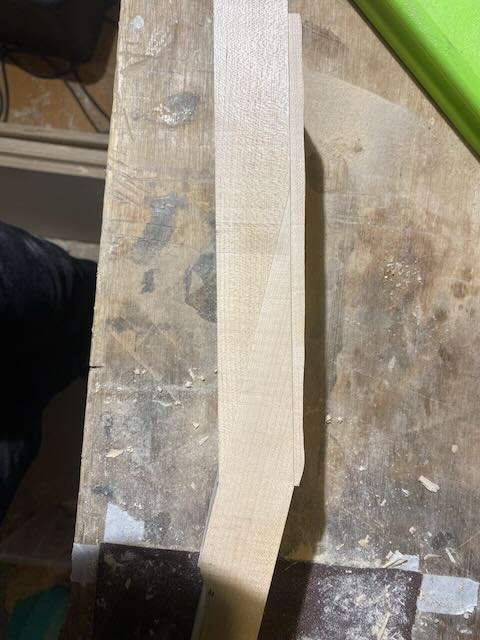
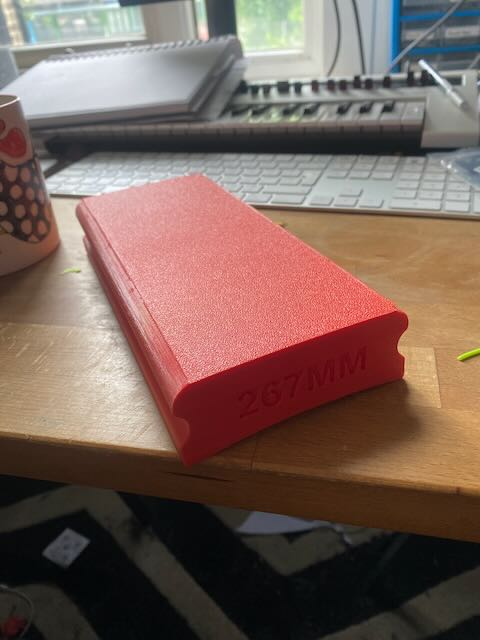

CUSTOM GUITAR: JOHN MOSHER
WORK IN PROGRESS - last updated 25/06/24
Sorry for the slow update! Took me a while to find all the materials but I think I have everything now. I've mostly been working on the neck which is always the lion's share of the work
Neck
Neck is made in 3 parts, its a scarf joint which is traditional for a les paul, but with an extra laminate on top to hide the joint from the front as we're going for a clear finish  Gluing the first bit  this is the front maple laminate  and gluing it on - you can see that the front surface is not flat yet making the front surface of the head flat and square
The neck gets roughly bandsawed out then routed very accurately (not pictured is the routing of th truss rod and carbon fibre reinforcement channels)
making the front surface of the head flat and square
The neck gets roughly bandsawed out then routed very accurately (not pictured is the routing of th truss rod and carbon fibre reinforcement channels)

Head
To make the head shape perfectly accurate I 3d printed a template to rout around with a template bit After routing (and a better template)
After routing (and a better template)
 Roughing out the volute on the back of the neck to make it super comfortable to play
Roughing out the volute on the back of the neck to make it super comfortable to play
 final neck before gluing the fretboard and carving the back
final neck before gluing the fretboard and carving the back

Fretboard
I 3d printed a sanding block to make sure the radius is perfect. not done photos of the actual fingerboard yet  rough cut the perloid slowly sanding back to the scalpel lines to ensure tiny tolerances for inlay
slowly sanding back to the scalpel lines to ensure tiny tolerances for inlay

Body
Made a plywood template for the body for rough bandsawing followed by precision routing roughed out on bandsaw - leaving the area around the neck pocket as you don't want to do that until neck reaches its final dimensions to ensure a snug fit.
roughed out on bandsaw - leaving the area around the neck pocket as you don't want to do that until neck reaches its final dimensions to ensure a snug fit.

(design draft doc)